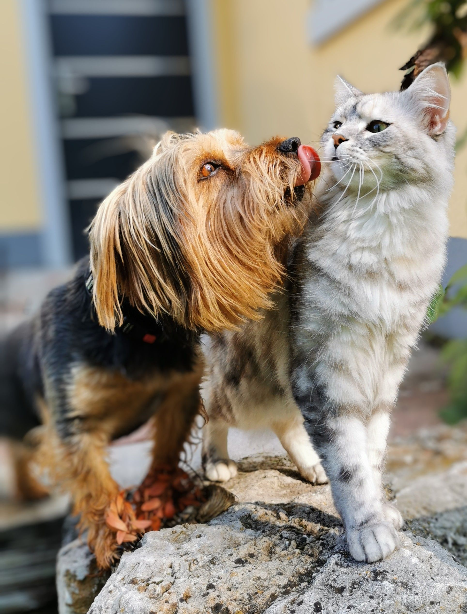
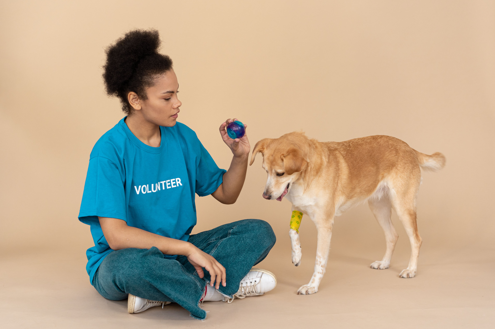

01
Conoce
Infórmate sobre el proceso y conoce las historias, personalidades y necesidades de los animales que acogemos.
Hay una huella esperando convertirse en parte de tu familia.
Conoce cómo cuidamos de ellos →
EL PROCESO
Te acompañamos durante todo el proceso para que conocer, conectar y adoptar sea una experiencia responsable y especial.
Infórmate sobre el proceso y conoce las historias, personalidades y necesidades de los animales que acogemos.
Hablamos contigo para conocer tu hogar, tu estilo de vida y qué compañero podría encajar mejor contigo.
Te acompañamos en los siguientes pasos para que la llegada a casa sea segura y el compromiso dure toda la vida.

NUESTRO COMPROMISO
Antes de empezar una nueva vida con una familia, cada animal necesita sentirse a salvo, recibir atención y recuperar la confianza a su propio ritmo.
Un entorno tranquilo donde descansar y sentirse protegido.
Cuidados, atención veterinaria y acompañamiento según sus necesidades.
Buscamos familias preparadas para ofrecerles un hogar estable y duradero.

SOBRE NOSOTROS
En Adopta Huellas trabajamos para conectar animales que necesitan una segunda oportunidad con personas dispuestas a cambiar sus vidas.
Nuestro objetivo es que cada adopción sea responsable, consciente y, sobre todo, una historia que dure para siempre.
Conoce nuestra historia →